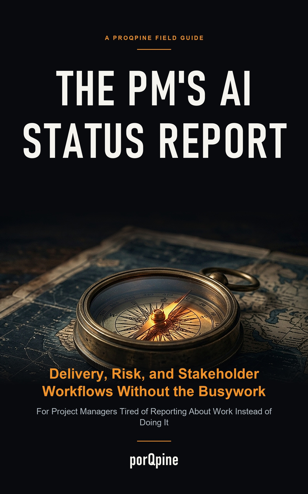

Kindle Edition • ASIN B0HL1VW2D9
The PM's AI Status Report
Delivery, Risk, and Stakeholder Workflows Without the Busywork
Stop treating weekly reporting as a Friday afternoon creative writing exercise. Learn structured workflows to turn raw Jira tickets and meeting notes into crisp, scannable executive summaries—while keeping human verification and decision control firmly in your hands.
📄 1-Page Weekly Project Status Review Worksheet
Before asking AI to draft an update, record four foundational anchors: the fact, the supporting reference, the owner, and the next deadline. Use this companion printable worksheet to audit drafts before sending.
Worked Example: The Jargon-Free Translation Workflow
In Chapter 3, product manager Mei-Ling Tan demonstrates structuring prompt constraints to translate technical sprint review notes into scannable stakeholder updates.
The BLUF Architecture (Bottom Line Up Front)
The book establishes a three-part structure for executive readability:
- 1. Executive Summary (BLUF): 3 bullets maximum: RAG status, primary blocker, and target resolution date.
- 2. Impact Zone: Decisions or actions specifically required from stakeholders.
- 3. Data Trail: Supporting ticket links and references for readers who wish to inspect evidence.
Reading Excerpt: The Honest Promise
"Project managers often face a reporting burden alongside delivery work. A workflow can organize project notes into a draft, but it cannot make decisions, verify facts, or manage the people involved.
There is no magic robot that can do the job. The useful aim is a workflow that makes reporting easier to review and correct."
Edition Details and Transparency
| Full Title | The PM's AI Status Report: Delivery, Risk, and Stakeholder Workflows Without the Busywork: For Project Managers Tired of Reporting About Work Instead of Doing It |
|---|---|
| Format | Kindle Edition (eBook) — Instant Delivery |
| ASIN | B0HL1VW2D9 |
| Author / Pen Name | porQpine |
| Publishing Brand | Savoth |
| Observed List Price | $2.99 USD (Amazon.com; check destination for current marketplace pricing) |
Ready to streamline your weekly reporting?
Get instant access to the complete workflow guide on Kindle or start with the free review worksheet.